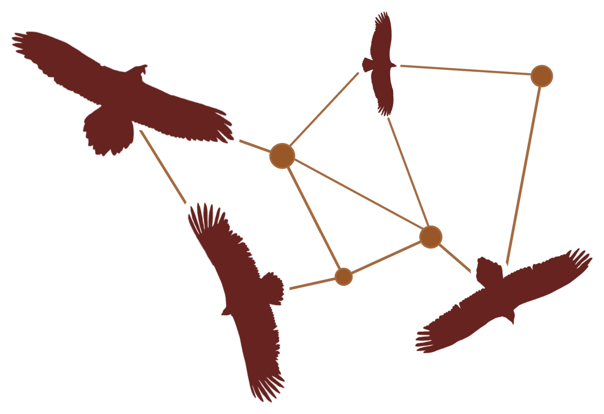

Perceive
What does the bird notice? Wind and thermals, a carcass on the ground, other vultures circling, a power line ahead.
Photo: eg6da6 / Pixabay
Vulture Cognition Analysis Network
A European research network on vulture cognition, behaviour and conservation.

About
VULCAN (Vulture Cognition Analysis Network) brings together researchers and conservation practitioners across Europe to study vulture cognition, and how it shapes the way vultures move, find food and deal with each other and with people. Across four European vulture species, we combine tracking and other sensor data, field experiments and modelling.

Our aims
How vultures perceive, learn, remember and decide, and how this develops from fledgling to adult.
Which vultures cope and which are at risk, and why this differs between species, between wild-hatched and captive-bred birds, and from one individual to the next.
Conservation practice, from release protocols and feeding sites to measures that keep vultures away from danger.
Research
How vultures take in, store and use information to decide what to do.
What does the bird notice? Wind and thermals, a carcass on the ground, other vultures circling, a power line ahead.
Photo: eg6da6 / Pixabay

How does experience change its behaviour? A young bird discovers where food is, which routes work, and what is safe, on its own or by following others.
Photo: Pexels / Pixabay

What does it keep, and for how long? Feeding sites, roosts, routes and places where something went wrong.
Photo: Jecqan / Pixabay

How does it choose between options? Stay or leave, follow the group or go alone, cross the sea or take the long way round.
Photo: u_8w6yutz7 / Pixabay